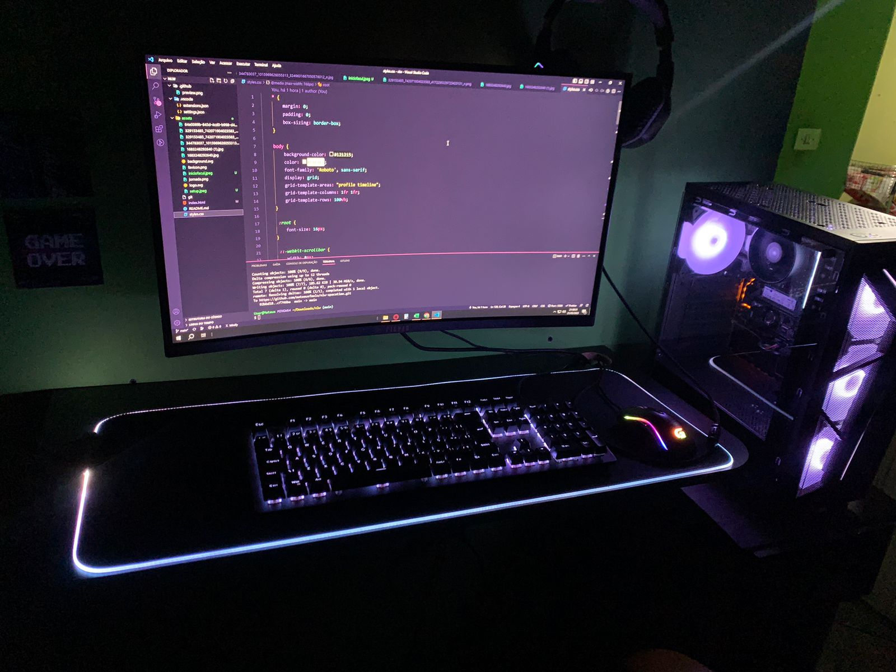
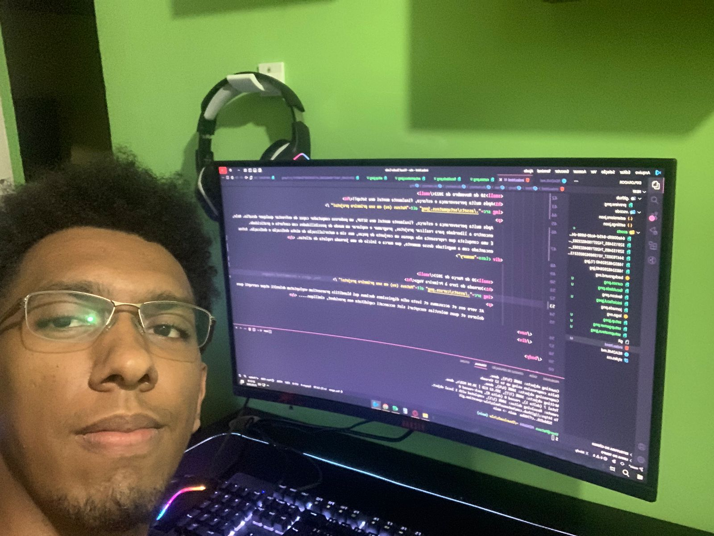

Como estudante de Análise e Desenvolvimento de Sistemas, embarquei nessa jornada acadêmica no ano passado. Durante esse período, tive a oportunidade de realizar alguns projetos, que me proporcionaram um crescimento significativo. No entanto, foi por meio
da incrível experiência proporcionada pela NLW que minha mente se abriu de forma extraordinária. Sinto uma imensa gratidão por toda a equipe envolvida nesse evento, pois através de suas iniciativas, meu horizonte se expandiu ainda mais.
Sou grato por essa oportunidade única.
10 de Novembro de 2022
Após muita perseverança e esforço, finalmente montei meu Setup!!

Após muita perseverança e esforço, finalmente montei meu SETUP, um poderoso computador capaz de enfrentar qualquer desafio. Nele, encontro a liberdade para realizar projetos, programar e explorar um mundo de possibilidades com conforto e praticidade.
É uma conquista que representa não apenas um conjunto de peças, mas sim a materialização de minha dedicação e dedicação. Estou encantado com a magnitude desse momento, que marca o início de uma jornada repleta de atletas.
21 de Maio de 2023
Projeto NLW

Finalizo este projeto inspirador, fruto da participação na NLW da Rocketseat, com um sentimento de gratidão que transborda. Através dessa jornada, aprendi de forma significativa e adquiri um conjunto valioso de habilidades. Tenho a certeza de que, no
futuro, quando revisitar esse projeto, testemunharei o quanto cresci e me aprimorei. A vocês, da Rocketseat, expresso minha profunda gratidão por fazerem parte dessa jornada transformada.